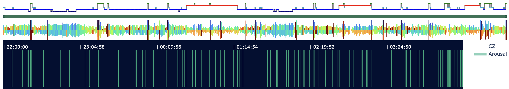
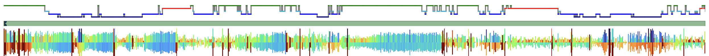
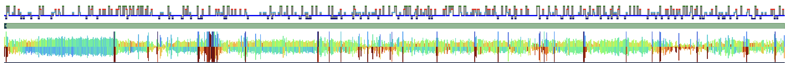
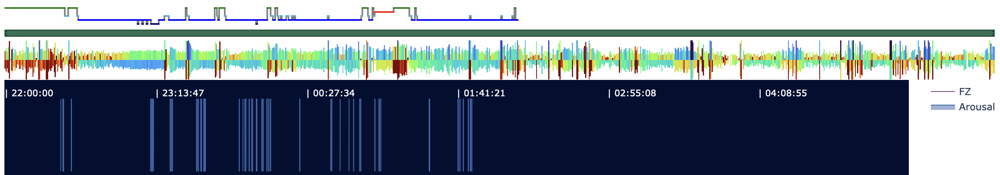

3.1. Annotation summary statistics
Simple tabulations
Luna's ANNOTS command can be used to generate
simple statistics (e.g. counts, durations) for the annotations associated with a recording:
luna harm1.lst -o out.db -s ANNOTS
Here we'll output a table that is simply all annotations (i.e. as if we simply concatenated the information from the .annot files):
destrat out.db +ANNOTS -r ANNOT INST T > tmp/ann.1
and then look at these in R:
d <- read.table( "tmp/ann.1" , header=T , stringsAsFactors=F)
This dataframe contains 16675 total annotations; the column headings
should mostly be self-evident. Start/stop times are either in elapsed
seconds, clock-time (_HMS) or elapsed time in H:M:S format
(_ELAPSED_HMS). Luna distinguishes two levels of annotation ID in
the .annot format, class (here ANNOT) and instance (here
INST); you can ignore the instance-level information here. Finally,
T is a string representation of the annotation time-period in Luna's
internal time-point units (1 time-point is 10e-9 seconds).
head(d)
ID ANNOT INST T CH DUR START START_ELAPSED_HMS
1 F01 W W 0_30000000000 . 30 0 00:00:00
2 F01 W W 30000000000_60000000000 . 30 30 00:00:30
3 F01 W W 60000000000_90000000000 . 30 60 00:01:00
4 F01 W W 90000000000_120000000000 . 30 90 00:01:30
5 F01 W W 120000000000_150000000000 . 30 120 00:02:00
6 F01 W W 150000000000_180000000000 . 30 150 00:02:30
START_HMS STOP STOP_ELAPSED_HMS STOP_HMS
1 22:00:00 30 00:00:30 22:00:30
2 22:00:30 60 00:01:00 22:01:00
3 22:01:00 90 00:01:30 22:01:30
4 22:01:30 120 00:02:00 22:02:00
5 22:02:00 150 00:02:30 22:02:30
6 22:02:30 180 00:03:00 22:03:00
Counting the total number of annotations:
table( d$ANNOT )
Arousal N1 N2 N3 R W
1232 1317 7444 1805 1942 2935
We can extract the counts stratified by individual:
table( d$ID, d$ANNOT )
Arousal N1 N2 N3 R W
F01 86 55 361 148 118 161
F02 97 36 431 145 180 69
F03 0 41 40 15 6 36
F04 0 36 65 18 19 45
F05 105 78 380 141 114 183
F06 0 24 36 18 18 21
F07 83 25 426 42 141 310
F08 159 108 366 103 132 134
F09 81 44 477 63 147 48
F10 131 81 426 84 147 183
M01 132 102 592 61 42 79
M02 41 30 304 11 17 97
M03 0 82 434 120 180 122
M04 0 99 344 160 103 245
M05 0 84 593 83 75 98
M06 0 71 435 63 132 212
M07 0 40 434 97 64 363
M08 0 64 421 96 71 330
M09 91 45 472 257 122 81
M10 226 172 407 80 114 118
Note: because of how the annotation/staging information was supplied
(e.g. via .eannot files only in some cases), so individuals do not
have any marked arousals: it is naturally always important to know
whether 0 in this context means truly no arousals detected, versus
that they were included/measured for only some individuals.
Also note that F01 now has stages other than just N2 as we retrieved the original file for this (and for F05, F10 and M10)
just prior to this step
Finally, we can look at the average duration of each annotation class:
round( tapply( d$DUR , list( d$ID , d$ANNOT ) , mean ) ,2 )
Arousal N1 N2 N3 R W
F01 11.03 30.00 30.00 30.00 30.00 30.00
F02 11.31 30.00 30.00 30.00 30.00 30.00
F03 NA 56.34 168.00 344.00 510.00 251.67
F04 NA 42.50 174.46 281.67 217.89 89.33
F05 13.03 30.00 30.00 30.00 30.00 30.00
F06 NA 56.25 371.67 225.00 253.33 55.71
F07 12.74 30.00 30.00 30.00 30.00 30.00
F08 11.72 30.00 30.00 30.00 30.00 30.00
F09 12.39 30.00 30.00 30.00 30.00 30.00
F10 11.10 30.00 30.00 30.00 30.00 30.00
M01 11.62 30.00 30.00 30.00 30.00 30.00
M02 12.34 30.00 30.00 30.00 30.00 30.00
M03 NA 30.00 30.00 30.00 30.00 30.00
M04 NA 30.00 30.00 30.00 30.00 30.00
M05 NA 30.00 30.00 30.00 30.00 30.00
M06 NA 30.00 30.00 30.00 30.00 30.00
M07 NA 30.00 30.00 30.00 30.00 30.00
M08 NA 30.00 30.00 30.00 30.00 30.00
M09 13.74 30.00 30.00 30.00 30.00 30.00
M10 12.09 30.00 30.00 30.00 30.00 30.00
-
manually scored arousals (when present, otherwise mean duration of
NA) are typically on the order of 10 seconds, which is reasonable -
for staging, most individual stage annotations are in units of 30 seconds. This need not be the case however, e.g. as we saw for
F03-F06, they had annotation files generated where contiguous intervals of the same stage were represented as a single annotaiton (e.g. 90 seconds = three 30 second epochs, etc). From Luna's perspective, either representation is fine for all commands. The point of this type of review is to check we don't have nonsensical/nonstandard values, e.g. mean stage annotation durations less than 1 second, etc.
Visualizing annotations
We'll get to hypnogram visualization and quantification more fully in the next step, but it is important to note here that visualizing all annotations can be very useful.
For example, using the previously-introduced lp.scope() viewer in lunapi, we can see cases
were things look "as expected" - e.g. the arousal annotations (green lines) are spread across the night,
the derived hypnogram (which is based on the supplied manual staging here, looks sensible - and it also aligns
with the broad patterns in the Hjorth summary plot below:

That is, where the Hjorth plot is taller, it reflects greater EEG amplitudes, and this typically tracks with deeper NREM sleep.
In contrast, here is a case where the hypnogram and Hjorth plots are not so clearly aligned:

Further, there can be clear cases where annotations/staging look unusual:

Also, there can be cases where annotations appear truncated versus the EDF, which might potentially reflect an error:

These are given just as examples to motivate visual inspection of annotations as well as signals when feasible.
We'll explore these staging-signal inconsistencies when considering
the SOAP command in a step below. But before that, we'll
continue with what we started above and move on the visualizing and
summarizing hypnograms.